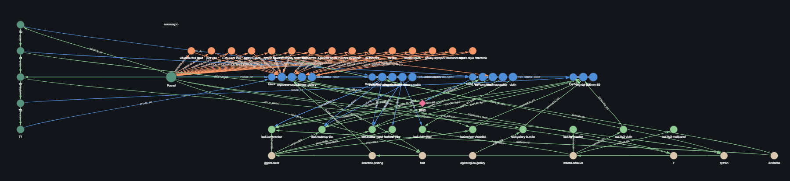
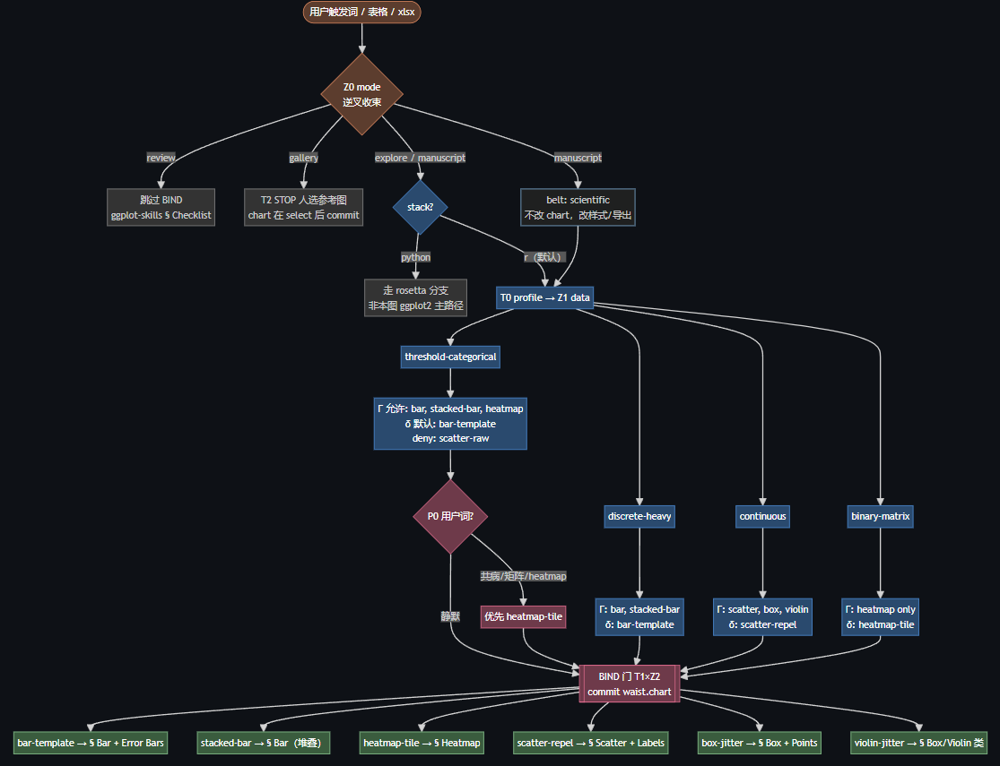

Fusing Four Plotting Skills into One ggplot Hourglass
blog1-One funnel for EDA, manuscript figures, review, and gallery—four repos, one waist record.
One funnel for EDA, manuscript figures, review, and gallery—four repos, one waist record.
Blog0 ends with a question: how do you actually carry out one skill merge? Perhaps the answer only shows up in practice. This post is one practice run—a theory-first funnel that folds four public plotting skills into a single ggplot hourglass, not a generic essay about skills.
Takeaways: a fused domain skill (ggplot-hourglass) and a reusable merge methodology (hourglass-skill-merge). You get a maintainer-facing map of triggers, BIND decisions, and leaf pointers, plus an honest read on Merged vs Linked and when the architecture is worth the cost.
Introduction
Blog0 argues that merge and learning are the same move. Blog1 is the case study: four GitHub plotting skills folded into one ggplot hourglass (waist record + BIND). I do not repeat Blog0 in full.
In one line: four fairly matched parallel skills → one Cursor entry → staged commits → one leaf pointing at an upstream § section. What is new is the routing protocol; templates and CLI link back to source repos—they are not pasted into a fifth encyclopedia.
Background
Why four skills show up together
Say “visualize this table,” “journal PDF,” “fix this plot,” or “Nature-style reference,” and Cursor may reasonably match all of:
| Upstream | One-line role | Typical triggers |
|---|---|---|
| ggplot-skills | R ggplot2 templates + review checklist | ggplot, visualize, fix plot |
| scientific-plotting-skill | Manuscript rules (palette, size, no title) | manuscript, journal, PDF |
| rosetta data-visualization | Python figures + journal size table | matplotlib, Figure 1/2/3 |
| AgentFigureGallery | Query → gallery → human select → bundle | gallery, reference, Nature style |
Each match is valid. Loaded in parallel, the agent sees duplicate leaves, norm conflicts (titled EDA vs no-title PDF), and gallery vs explore fighting for the same utterance. The problem is not missing knowledge—it is unclear topology. Merge needs a maintainable protocol, not a longer prose file.
For HDAT9800, health tables like medicaldata::diabetes anchor the BIND walkthrough below; they are not the main narrative.
How the four skills attach to one funnel
| Upstream | Role in the hourglass |
|---|---|
| ggplot-skills | Primary R positive-tree leaves + review checklist |
| scientific-plotting-skill | Belt overlay—not a fifth full funnel |
| rosetta data-visualization | stack=python branch |
| AgentFigureGallery | Entire mode=gallery branch + STOP |
Mutex example: keywords manuscript, paper, PDF win over explore.
What we built
Hourglass topology: inverse tree → waist → positive tree
\ inverse tree: utterance → waist (wide → narrow) /
\ phrases → mode / data / constraints /
\________________________ ___________________________/
▼ waist (weak-convergence record)
╱‾‾‾‾‾‾‾‾‾‾‾‾‾‾‾‾‾‾‾‾‾‾‾‾‾‾ ‾‾‾‾‾‾‾‾‾‾‾‾‾‾‾‾‾‾‾‾‾‾‾‾‾‾‾‾‾‾‾╲
╱ positive tree: waist → one deliverable leaf (narrow → wide) ╲
╱ template § / export / CLI / follow-up questions ╲| Segment | Direction | Job |
|---|---|---|
| Inverse tree | wide → narrow | Map utterances to waist fields (entries aliases) |
| Waist | bottleneck | {mode, data, chart?, delivery, stack, overlay[]} with staged commits |
| Positive tree | narrow → wide | After BIND, open one upstream § leaf |
Triggers live on the inverse tree; irreversible choices commit at the waist; deliverables live on positive-tree leaves. One waist record replaces a combinatorial mega-enum (explore×bar×png×…):
waist_active:
mode: explore
data: threshold-categorical
chart: bar-template # committed at T1 BIND
delivery: png-dpi-800
stack: r
overlay:
- scientific-plotting # belt when manuscriptAll four repos hang on one funnel—not four parallel entry files. Phase pipeline (abbreviated):
Inverse utterance → mode (+ stack, overlay)
T0 profile(columns) → data
T1 BIND ★ Γ(data) → δ → commit → chart + leaf
Belt scientific overlay if manuscript
T2 STOP gallery only — until human select
T3 render one leafMaintainer map: Figure 1
Ordinary skills are long markdown plus a YAML description. The hourglass externalizes what maintainers need to see:
- Triggers — inverse-tree entries (
visualize_table≈plot_xlsx→mode=explore) - Decisions — waist zones and the BIND gate (
T0 profile→Γ + δ→ commitchart) - Outputs — positive-tree leaf pointers (ggplot templates, scientific belt, rosetta figures, gallery CLI)

Figure 1 — Concept graph (row layout). Top: inverse entries; middle: waist field zones (Z0–Z3); bottom: positive-tree leaves and upstream pointers. T0/T1/BIND phases are annotated at the sides. This is a maintainer’s map, not the full spec the agent loads every turn.
Optional funnel log turns implicit routing into a replayable trace:
[inverse] entry=visualize_table → mode=explore, stack=r
[T0] profile → data=threshold-categorical
[BIND T1] Γ allow=[bar,heatmap] δ=bar-template → chart=bar-template
[T3] leaf=ggplot-skills § Bar Chart | delivery=png-dpi-800BIND: where chart type is decided
Chart choice does not finish at the inverse-tree exit. Field chart sits on waist zone Z2 and commits at T1 BIND (Γ(data) → default δ → optional P0 user words → commit). Before BIND, chart is pending.

Figure 2 — BIND flow (T1 × Z2). T0 profile → allowed charts Γ(data) → default δ → commit waist.chart and leaf pointer. Chart semantics center here, not at the top of the inverse tree.
Figure 1 vs Figure 2: Figure 1 is global routing and four-skill attachment; Figure 2 is the chart decision on explore/manuscript paths (review uses skip_bind; gallery commits chart only after human select).
Health-data walkthrough: continuous vs mistaken bar
In medicaldata::diabetes, age × BMI is a pair of continuous columns:
| Step | Continuous (correct) | Bar chart (BIND mistake) |
|---|---|---|
| T0 | data=continuous |
Force bins → threshold-categorical |
| Γ | allow scatter / box / violin | allow bar / stacked-bar |
| δ | scatter-repel |
bar-template |
| Leaf | ggplot-skills § Scatter | § Bar Chart |
library(ggplot2)
library(medicaldata)
ggplot(diabetes, aes(x = age, y = bmi)) +
geom_point()That is not a broken ggplot template—it is data and chart misaligned before BIND. The course anchor shows that a merged skill can expose testable routing, not just more prose.
Four modes, one waist
| Mode | Example utterance | Path | Upstream |
|---|---|---|---|
| explore | visualize table / EDA | T0 → BIND → render | ggplot-skills templates |
| manuscript | journal PDF / paper | same + scientific belt | ggplot + scientific |
| review | fix this plot | short checklist, skip_bind |
ggplot-skills review |
| gallery | Nature style / pick reference | STOP until human select | AgentFigureGallery |
Full entry aliases live in hourglass-waist-registry.yaml and references/inverse-entries.md—not duplicated here.
Artifacts
| Artifact | Role |
|---|---|
ggplot-hourglass/SKILL.md |
Thin fused entry—one funnel, not four parallel loads |
hourglass-skill-merge/SKILL.md |
Meta skill—hourglass merge for any conflicting set |
hourglass-waist-registry.yaml |
Machine-readable entries, Γ, mutex, leaves |
hourglass-skill-architecture.md |
Theory: multi-hourglass, belt, anti-patterns |
hourglass-unified-funnel.md |
Schema-level funnel diagram |
| HTML viewer + chart-selection | Full interactive / static pages (workspace assets) |
Merged: orchestration shell, registry, reference shards. Linked: upstream SKILL.md sections and templates—pointers, not copies—aligned with Blog0’s links back to source material instead of duplicating.
Discussion
When the hourglass is overkill
For “just make a scatter plot,” inverse tree + waist + mutex + belt + BIND is heavy architecture—the deliverable is one geom_point().
- Less agent slack — skills shine on semantic trigger + parallel checklists; a hard funnel can feel tight when the user pivots mid-chat.
- Maintenance — figures track
hourglass-waist-registry.yaml, aliases, and leaf pointers when upstream repos change. - Fusion ≠ copy — simple jobs can open ggplot-skills directly without BIND.
Worth it when modes stack (EDA + manuscript + review + gallery + R/Python fork). Skip it for single-intent, single-chart tasks. A merge product does not have to be an hourglass.
Why the waist does not look chart-first
chart is on the waist and is the semantic center of the deliverable. It looks small on the overview map because:
- The waist is a multi-field record (
mode · data · chart? · delivery · stack · overlay[]), not a chart enum;chartis nullable until T1. - Late binding — users say “visualize this table,” not “bar chart”;
T0 profileand Γ(data) narrow allowed charts first. - Inverse tree commits mode first —
reviewdoes not pick a new figure;gallerygetschartfrom human select. A waist that collapsed to{bar|scatter|…}alone would squeeze those paths out. - Same chart, different mode — explore bar vs manuscript bar share a geom; belt and delivery distinguish them.
Chart type is what matters most for the deliverable—but it commits at BIND, after task class and data feasibility narrow the options. Figure 2 pulls that weight back into view.
What we merged, what we linked, and what fusion actually is
Fusion did not glue four SKILL.md files into a fifth twin. The product is a thin router + registry + leaf pointers—four capabilities mounted, typically one leaf deep-read per turn.
| Type | Examples | Relation to upstream |
|---|---|---|
| Linked | Four repos’ SKILL.md, templates, CLI |
Bodies not copied; leaves point to § sections |
| Merged | ggplot-hourglass/SKILL.md, references/ |
New orchestration (~hundreds of lines) |
| Merged | hourglass-waist-registry.yaml |
New machine-readable routing (~hundred lines) |
| Meta | hourglass-*.md, HTML viewer |
Maintainer map; not deliverable body |
How much comes from the four upstream skills?
- As new files: the fusion layer is ~0% literal copy of upstream template prose.
- At runtime after BIND: the opened leaf is ~100% upstream text—the fusion layer does not rewrite templates.
- As capability registration: the registry mounts all four skills;
Do not load all four upstream SKILL files every turnmeans mount ≠ parallel read.
ggplot-hourglass (single entry) → BIND → one leaf → upstream § sectionHow we keep the fused skill honest
Leaf pointers are diffable against source; the registry is the single source for entries, Γ, mutex, and leaves; BIND runs Γ → δ → commit; funnel logs replay routing; gallery STOP and review skip_bind block wrong chart commits; default paths must state assumptions explicitly.
Correctness lives in routing and pointers—not in description semantics hitting 100% every time.
Correctness lives in committed waist fields and leaf pointers—not in merging four SKILL bodies into one file.
Is fusion just an index?
Partly—leaf tables and entry aliases are index-like. It also adds law no single upstream skill contains: a four-mode taxonomy, BIND+Γ, a scientific belt orthogonal to the positive tree, mutex/conflict_matrix, phased waist commits, and gallery STOP edges.
Fusion = single-entry router with commit protocol + conflict matrix + maintainer map; the index is one layer, not the whole.
What the diagram does not guarantee
Good for: entry aliases and mode forks; BIND chart/leaves (with Figure 2); belt, stack, and STOP edges maintainers must see at a glance.
Not guaranteed: Cursor description matching every alias on the figure; T0 profile(data) on your actual table (figures are schema); gallery content before human select; registry and leaf pointers staying in sync—a stale diagram misleads if it is your only spec.
The hourglass figure is a maintainer’s map, not the agent’s full specification. Confidence should track BIND commits and leaf opens, not diagram familiarity.
After those limits: when four plotting skills collide, one waist + BIND still beats four parallel bodies—but a lone ggplot task may be faster through upstream prose alone.
Closing
Blog0 asks what one skill merge looks like in practice. This ggplot attempt answers with a theory-shaped funnel: inverse tree to fix triggers, waist to stage commits (chart at BIND, not at the top), positive tree to a single leaf, visualization for maintainers, and an honest scope for when the machinery costs more than it saves.
Merge in practice can look like this—without pretending every future merge must be an hourglass.